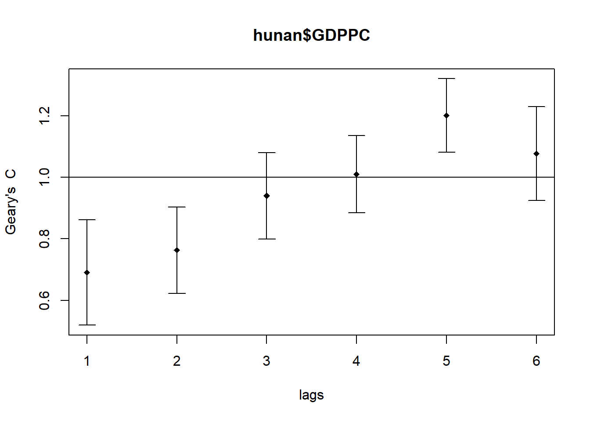

pacman::p_load(sf, spdep, tmap, tidyverse)Hands-on Exercise 9 : Global Measures of Spatial Autocorrelation
9.1 Overview
In this hands-on exercise, you will learn how to compute Global Measures of Spatial Autocorrelation (GMSA) by using spdep package. By the end to this hands-on exercise, you will be able to:
import geospatial data using appropriate function(s) of sf package,
import csv file using appropriate function of readr package,
perform relational join using appropriate join function of dplyr package,
compute Global Spatial Autocorrelation (GSA) statistics by using appropriate functions of spdep package,
plot Moran scatterplot,
compute and plot spatial correlogram using appropriate function of spdep package.
provide statistically correct interpretation of GSA statistics.
9.2 Getting Started
9.2.1 The analytical question
In spatial policy, one of the main development objective of the local government and planners is to ensure equal distribution of development in the province. Our task in this study, hence, is to apply appropriate spatial statistical methods to discover
if development are even distributed geographically.
If the answer is No. Then, our next question will be “is there sign of spatial clustering?”.
And, if the answer for this question is yes, then our next question will be “where are these clusters?”
In this case study, we are interested to examine the spatial pattern of a selected development indicator (i.e. GDP per capita) of Hunan Provice, People Republic of China.
9.2.2 The Study Area and Data
Two data sets will be used in this hands-on exercise, they are:
Hunan province administrative boundary layer at county level. This is a geospatial data set in ESRI shapefile format.
Hunan_2012.csv: This csv file contains selected Hunan’s local development indicators in 2012.
9.2.3 Setting the Analytical Toolls
Before we get started, we need to ensure that spdep, sf, tmap and tidyverse packages of R are currently installed in your R.
sf is use for importing and handling geospatial data in R,
tidyverse is mainly use for wrangling attribute data in R,
spdep will be used to compute spatial weights, global and local spatial autocorrelation statistics, and
tmap will be used to prepare cartographic quality chropleth map.
The code chunk below is used to perform the following tasks:
creating a package list containing the necessary R packages,
checking if the R packages in the package list have been installed in R,
- if they have yet to be installed, RStudio will installed the missing packages,
launching the packages into R environment.
9.3 Getting the Data Into R Environment
In this section, you will learn how to bring a geospatial data and its associated attribute table into R environment. The geospatial data is in ESRI shapefile format and the attribute table is in csv fomat.
9.3.1 Import shapefile into r environment
The code chunk below uses st_read() of sf package to import Hunan shapefile into R. The imported shapefile will be simple features Object of sf.
hunan <- st_read(dsn = "../Hands-On_Ex04/data/geospatial",
layer = "Hunan")Reading layer `Hunan' from data source
`C:\shaysnutss\IS1455-GAA\Hands-on_Ex\Hands-on_Ex04\data\geospatial'
using driver `ESRI Shapefile'
Simple feature collection with 88 features and 7 fields
Geometry type: POLYGON
Dimension: XY
Bounding box: xmin: 108.7831 ymin: 24.6342 xmax: 114.2544 ymax: 30.12812
Geodetic CRS: WGS 849.3.2 Import csv file into r environment
Next, we will import Hunan_2012.csv into R by using read_csv() of readr package. The output is R data frame class.
hunan2012 <- read_csv("../Hands-On_Ex04/data/aspatial/Hunan_2012.csv")9.3.3 Performing relational join
The code chunk below will be used to update the attribute table of hunan’s SpatialPolygonsDataFrame with the attribute fields of hunan2012 dataframe. This is performed by using left_join() of dplyr package
hunan <- left_join(hunan,hunan2012) %>%
select(1:4, 7, 15)9.3.4 Visualising Regional Development Indicator
Now, we are going to prepare a basemap and a choropleth map showing the distribution of GDPPC 2012 by using qtm() of tmap package.
equal <- tm_shape(hunan) +
tm_fill("GDPPC",
n = 5,
style = "equal") +
tm_borders(alpha = 0.5) +
tm_layout(main.title = "Equal interval classification")
quantile <- tm_shape(hunan) +
tm_fill("GDPPC",
n = 5,
style = "quantile") +
tm_borders(alpha = 0.5) +
tm_layout(main.title = "Equal quantile classification")
tmap_arrange(equal,
quantile,
asp=1,
ncol=2)
9.4 Global Measures of Spatial Autocorrelation
In this section, you will learn how to compute global spatial autocorrelation statistics and to perform spatial complete randomness test for global spatial autocorrelation.
9.4.1 Computing Contiguity Spatial Weights
Before we can compute the global spatial autocorrelation statistics, we need to construct a spatial weights of the study area. The spatial weights is used to define the neighbourhood relationships between the geographical units (i.e. county) in the study area.
In the code chunk below, poly2nb() of spdep package is used to compute contiguity weight matrices for the study area. This function builds a neighbours list based on regions with contiguous boundaries. If you look at the documentation you will see that you can pass a “queen” argument that takes TRUE or FALSE as options. If you do not specify this argument the default is set to TRUE, that is, if you don’t specify queen = FALSE this function will return a list of first order neighbours using the Queen criteria.
More specifically, the code chunk below is used to compute Queen contiguity weight matrix.
wm_q <- poly2nb(hunan,
queen=TRUE)
summary(wm_q)Neighbour list object:
Number of regions: 88
Number of nonzero links: 448
Percentage nonzero weights: 5.785124
Average number of links: 5.090909
Link number distribution:
1 2 3 4 5 6 7 8 9 11
2 2 12 16 24 14 11 4 2 1
2 least connected regions:
30 65 with 1 link
1 most connected region:
85 with 11 linksThe summary report above shows that there are 88 area units in Hunan. The most connected area unit has 11 neighbours. There are two area units with only one neighbours.
9.4.2 Row-standardised weights matrix
Next, we need to assign weights to each neighboring polygon. In our case, each neighboring polygon will be assigned equal weight (style=“W”). This is accomplished by assigning the fraction 1/(#ofneighbors) to each neighboring county then summing the weighted income values. While this is the most intuitive way to summaries the neighbors’ values it has one drawback in that polygons along the edges of the study area will base their lagged values on fewer polygons thus potentially over- or under-estimating the true nature of the spatial autocorrelation in the data. For this example, we’ll stick with the style=“W” option for simplicity’s sake but note that other more robust options are available, notably style=“B”.
rswm_q <- nb2listw(wm_q,
style="W",
zero.policy = TRUE)
rswm_qCharacteristics of weights list object:
Neighbour list object:
Number of regions: 88
Number of nonzero links: 448
Percentage nonzero weights: 5.785124
Average number of links: 5.090909
Weights style: W
Weights constants summary:
n nn S0 S1 S2
W 88 7744 88 37.86334 365.91479.5 Global Measures of Spatial Autocorrelation: Moran’s I
In this section, you will learn how to perform Moran’s I statistics testing by using moran.test() of spdep.
9.5.1 Maron’s I test
The code chunk below performs Moran’s I statistical testing using moran.test() of spdep.
moran.test(hunan$GDPPC,
listw=rswm_q,
zero.policy = TRUE,
na.action=na.omit)
Moran I test under randomisation
data: hunan$GDPPC
weights: rswm_q
Moran I statistic standard deviate = 4.7351, p-value = 1.095e-06
alternative hypothesis: greater
sample estimates:
Moran I statistic Expectation Variance
0.300749970 -0.011494253 0.004348351 hunan$GDPPC: This is specifying the variable on which the Moran’s I test will be performed. It looks like it’s taking a column namedGDPPC(which might stand for “Gross Domestic Product Per Capita”) from a data frame or a list namedhunan. This is the dataset that contains the values we want to test for spatial autocorrelation.listw=rswm_q: Thelistwparameter stands for “list weights” and is used to pass a spatial weights object to the function. The objectrswm_qcontains information about the spatial relationships between the observations in thehunandataset. These weights define how the influence of each data point is spread out to its neighboring points. The type of weights (e.g., rook, queen, distance-based) and their specifics are defined in therswm_qobject.zero.policy = TRUE: This parameter is used to handle cases where there are regions with no neighbors (islands) in the spatial weights list. By settingzero.policy = TRUE, the function is instructed to proceed with the Moran’s I test even if some areas have no neighbors according to the weights matrix. Essentially, it’s a way to tell the function to ignore these “islands” rather than throwing an error.
Note
This means that the values in nearby locations are dissimilar and that is statistically significant. The null hypothesis that the data follows random distribution should be rejected
9.5.2 Computing Monte Carlo Moran’s I
What is Monte Carlo?
Start with Real Spatial Data: You have a map with data points, each representing a value of interest, like crime rates in different neighborhoods.
The Question: You want to know if high crime rates in one area are related to high crime rates in neighboring areas (positive spatial autocorrelation), or if it’s just random.
Creating a Simulated World:
Imagine you take the map and erase all the crime rate data.
Then, you redistribute those crime rates randomly across the map. This means you’re shuffling the data points so they no longer have their original spatial pattern. Each area gets a crime rate, but now it’s randomly assigned, not based on the real-world data.
Calculating Moran’s I for the Simulated World:
simulations (which represent a world of randomness without any spatial pattern
With this shuffled map, you calculate Moran’s I, a statistic that measures how much the crime rate in one area is similar to the rates in nearby areas.
This calculation gives you a sense of whether the shuffled (randomized) data still shows any pattern of similar values being close together.
Repeat the Simulation Multiple Times:
You don’t do this process just once. You repeat it many times, each time reshuffling the data and calculating a new Moran’s I.
This creates a bunch of Moran’s I values from worlds that are similar to ours but with randomized crime rates.
Compare the Real World to the Simulated Worlds:
Now, you compare the Moran’s I you calculated from your real data to the range of Moran’s I values you got from your simulations.
If the real Moran’s I is much higher than what you mostly see in the simulations, it suggests that the pattern in your real data is not random; it’s statistically significant.
so if moran i of real data is much greater tahn the ranges of moran i we got from the simulations, means there are culstered data and observations closer to each other are similar
The code chunk below performs permutation test for Moran’s I statistic by using moran.mc() of spdep. A total of 100 simulation will be performed.
set.seed(1234)
bperm= moran.mc(hunan$GDPPC,
listw=rswm_q,
nsim=99,
zero.policy = TRUE,
na.action=na.omit)
bperm
Monte-Carlo simulation of Moran I
data: hunan$GDPPC
weights: rswm_q
number of simulations + 1: 100
statistic = 0.30075, observed rank = 100, p-value = 0.01
alternative hypothesis: greaterbperm$res[1:99] [1] 0.0579802047 0.0995374215 0.0694251386 -0.1042239884 0.0038110193
[6] -0.0601316902 -0.0898497549 0.0886477537 -0.0495291344 0.0044879277
[11] -0.0403080940 -0.1030595506 -0.0274239009 0.1083713535 -0.0188529094
[16] -0.0484197610 -0.0253754744 -0.0212514958 0.0469779612 0.0408910440
[21] -0.0324240897 0.0244599283 -0.0285621520 -0.0315422476 -0.0648166118
[26] 0.0507360621 -0.0196479277 -0.1012356629 -0.0033345890 -0.0451875786
[31] -0.0169780147 0.0972702432 0.1049185834 -0.0001699816 -0.0783668376
[36] -0.0360203633 -0.0554003109 -0.0262207742 0.0066261362 -0.0584681167
[41] -0.0168718257 0.0082456956 -0.0546958795 -0.0373107908 -0.0653454082
[46] 0.0462297591 -0.0150531959 0.0282874005 0.0157705925 -0.0836056491
[51] -0.1190189000 0.0172090478 0.0255428252 -0.0029558492 -0.0355542593
[56] -0.1258924633 0.0435571651 0.1046473070 -0.0859109762 0.0829705234
[61] -0.0943879694 -0.0587038328 -0.0135097048 -0.0506202830 -0.0528293680
[66] -0.1124883683 -0.0770476050 -0.1152233509 -0.0955935516 -0.0970605978
[71] 0.0637698821 -0.1005808607 -0.0349010557 -0.0481678951 -0.0460736682
[76] -0.0446534235 0.0496933101 0.0463172140 -0.0224125804 -0.0671087934
[81] -0.0187950839 -0.0221283710 -0.0038543168 0.0485712996 -0.0670291358
[86] -0.0340662445 -0.0547678023 -0.1115993786 -0.0286081812 -0.0189904775
[91] -0.0010492210 -0.0588839587 -0.0013944345 0.0691749580 0.1021861142
[96] 0.0186604784 0.0091017099 -0.0265195474 0.0001244783The code mean(bperm$res[1:999]) in R is used to calculate the average (mean) of a subset of simulation results from a Monte Carlo test for spatial autocorrelation (Moran’s I).
mean(bperm$res[1:99])[1] -0.01842288The R code var(bperm$res[1:999]) is used to calculate the variance of a subset of simulation results.
var(bperm$res[1:99])[1] 0.00338786you can assess the variability in the Moran’s I values that would be expected under the null hypothesis of no spatial autocorrelation. If the actual Moran’s I calculated from your data is outside this range of variability, it may suggest that the pattern observed in your data is not due to random chance, and there is indeed spatial autocorrelation.
hist(bperm$res,
freq=TRUE,
breaks=20,
xlab="Simulated Moran's I")
abline(v=0,
col="red") 9.6 Global Measures of Spatial Autocorrelation: Geary’s C
In this section, you will learn how to perform Geary’s C statistics testing by using appropriate functions of spdep package.
9.6.1 Geary’s C test
The code chunk below performs Geary’s C test for spatial autocorrelation by using geary.test() of spdep.
geary.test(hunan$GDPPC, listw=rswm_q)
Geary C test under randomisation
data: hunan$GDPPC
weights: rswm_q
Geary C statistic standard deviate = 3.6108, p-value = 0.0001526
alternative hypothesis: Expectation greater than statistic
sample estimates:
Geary C statistic Expectation Variance
0.6907223 1.0000000 0.0073364 values are dissimilar
9.6.2 Computing Monte Carlo Geary’s C
The code chunk below performs permutation test for Geary’s C statistic by using geary.mc() of spdep.
set.seed(1234)
bperm=geary.mc(hunan$GDPPC,
listw=rswm_q,
nsim=99)
bperm
Monte-Carlo simulation of Geary C
data: hunan$GDPPC
weights: rswm_q
number of simulations + 1: 100
statistic = 0.69072, observed rank = 1, p-value = 0.01
alternative hypothesis: greater9.6.3 Visualising the Monte Carlo Geary’s C
Next, we will plot a histogram to reveal the distribution of the simulated values by using the code chunk below.
mean(bperm$res[1:99])[1] 1.00126var(bperm$res[1:99])[1] 0.006247721summary(bperm$res[1:99]) Min. 1st Qu. Median Mean 3rd Qu. Max.
0.8289 0.9563 0.9971 1.0013 1.0413 1.2385 9.7 Spatial Correlogram
Spatial correlograms are great to examine patterns of spatial autocorrelation in your data or model residuals. They show how correlated are pairs of spatial observations when you increase the distance (lag) between them - they are plots of some index of autocorrelation (Moran’s I or Geary’s c) against distance.Although correlograms are not as fundamental as variograms (a keystone concept of geostatistics), they are very useful as an exploratory and descriptive tool. For this purpose they actually provide richer information than variograms.
9.7.1 Compute Moran’s I correlogram
In the code chunk below, sp.correlogram() of spdep package is used to compute a 6-lag spatial correlogram of GDPPC. The global spatial autocorrelation used in Moran’s I. The plot() of base Graph is then used to plot the output.
MI_corr <- sp.correlogram(wm_q,
hunan$GDPPC,
order=6,
method="I",
style="W")
plot(MI_corr)
order=6: This tells the command to look at six levels of connection. So not just next-door neighbors (first-level connections), but also the neighbors’ neighbors, and so on, up to six steps away.
Points: Each point on the correlogram represents the Moran’s I statistic calculated for that particular lag. The value of Moran’s I at lag 1 being the highest and positive suggests that neighboring areas (the first level of neighbors) have the most significant positive spatial autocorrelation, indicating that areas with similar GDP per capita values are geographically close.
Vertical Lines (Error Bars): The vertical lines extending from each point represent the uncertainty or variability in the Moran’s I estimates, often corresponding to confidence intervals. The length of the line indicates the range of Moran’s I values that are statistically plausible for that lag. If the line crosses the horizontal line at Moran’s I = 0, the spatial autocorrelation for that lag is not statistically significant at the chosen confidence level.8u/000
By plotting the output might not allow us to provide complete interpretation. This is because not all autocorrelation values are statistically significant. Hence, it is important for us to examine the full analysis report by printing out the analysis results as in the code chunk below.
print(MI_corr)Spatial correlogram for hunan$GDPPC
method: Moran's I
estimate expectation variance standard deviate Pr(I) two sided
1 (88) 0.3007500 -0.0114943 0.0043484 4.7351 2.189e-06 ***
2 (88) 0.2060084 -0.0114943 0.0020962 4.7505 2.029e-06 ***
3 (88) 0.0668273 -0.0114943 0.0014602 2.0496 0.040400 *
4 (88) 0.0299470 -0.0114943 0.0011717 1.2107 0.226015
5 (88) -0.1530471 -0.0114943 0.0012440 -4.0134 5.984e-05 ***
6 (88) -0.1187070 -0.0114943 0.0016791 -2.6164 0.008886 **
---
Signif. codes: 0 '***' 0.001 '**' 0.01 '*' 0.05 '.' 0.1 ' ' 19.7.2 Compute Geary’s C correlogram and plot
In the code chunk below, sp.correlogram() of spdep package is used to compute a 6-lag spatial correlogram of GDPPC. The global spatial autocorrelation used in Geary’s C. The plot() of base Graph is then used to plot the output.
GC_corr <- sp.correlogram(wm_q,
hunan$GDPPC,
order=6,
method="C",
style="W")
plot(GC_corr)
print(GC_corr)Spatial correlogram for hunan$GDPPC
method: Geary's C
estimate expectation variance standard deviate Pr(I) two sided
1 (88) 0.6907223 1.0000000 0.0073364 -3.6108 0.0003052 ***
2 (88) 0.7630197 1.0000000 0.0049126 -3.3811 0.0007220 ***
3 (88) 0.9397299 1.0000000 0.0049005 -0.8610 0.3892612
4 (88) 1.0098462 1.0000000 0.0039631 0.1564 0.8757128
5 (88) 1.2008204 1.0000000 0.0035568 3.3673 0.0007592 ***
6 (88) 1.0773386 1.0000000 0.0058042 1.0151 0.3100407
---
Signif. codes: 0 '***' 0.001 '**' 0.01 '*' 0.05 '.' 0.1 ' ' 1